The Fortney Centennial Reunion 2007 · Norway, the ancestral farm, the church, and the family.
About these photos: Images extracted from the Fortney Family: Centennial Reunion 2007 Keynote presentation (199 slides), compiled by Alan Jon Fortney. Place images in the images/reunion/ folder named slide_001.jpg, slide_002.jpg, etc., matching the slide numbers below. Photos of Fortun, Norway were taken by Jill Andersen Fortney during the 2005 visit. Photos of the current farm residents are courtesy of Torill Susanne Magnusdotter Yttri Otterhjell.
Fortney / Forthun
Norway & The Ancestral Farm
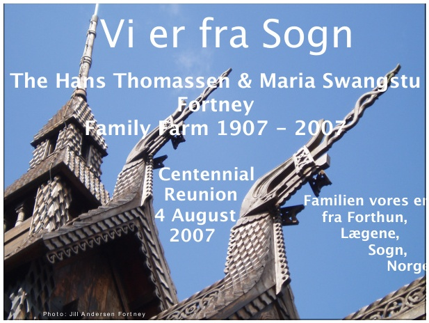
🏠slide_001.jpg
');this.remove();">
Slide 1
The Hans Thomassen & Maria Swangstu Fortney Family Farm, 1907–2007. Photo: Jill Andersen Fortney.
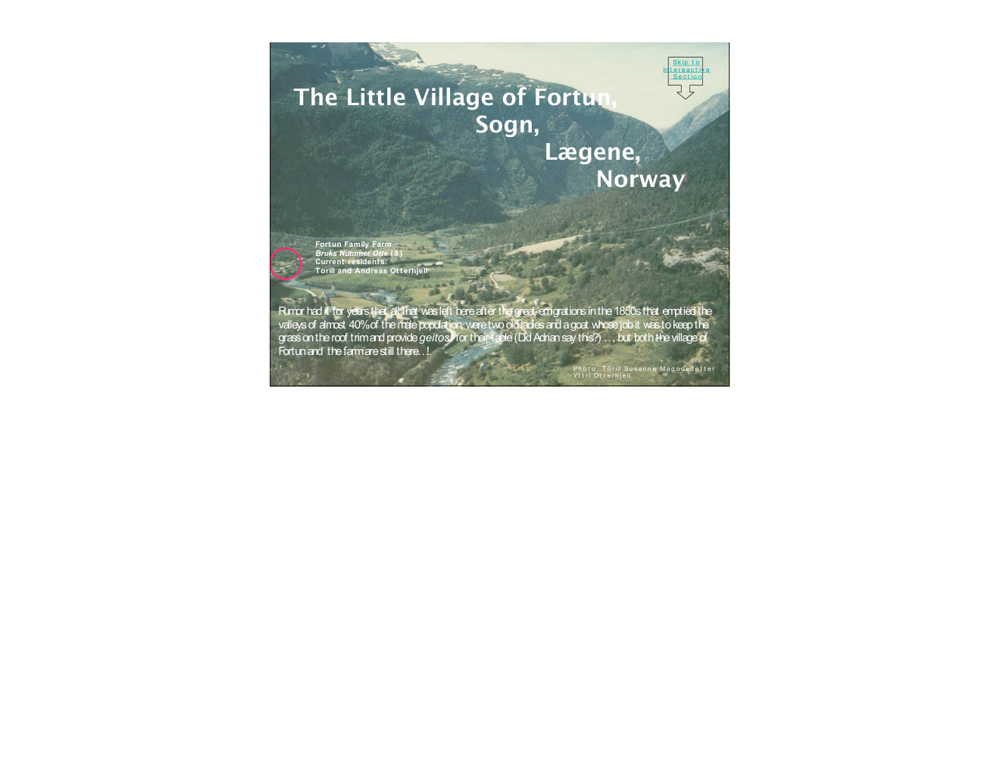
🏔️slide_002.jpg
');this.remove();">
Slide 2
The little village of Fortun, Lægene, Sogn, Norway. Current residents of the farm (Bnr #8): Torill and Andreas Otterhjell.
🌄slide_002.jpg
');this.remove();">
Slide 2
Fortun Family Farm — Bruks Nummer Otte (Farm #8). Current residents: Torill and Andreas Otterhjell.
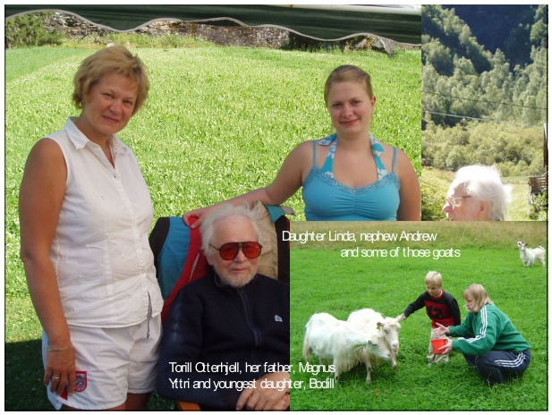
👨👧slide_003.jpg
');this.remove();">
Slide 3
Always Hospitable — Torill Susanne Magnusdotter Yttri Otterhjell and her father Magnus Asbjørn Tollefson Yttri.
🐐slide_003.jpg
');this.remove();">
Slide 3
Daughter Linda, nephew Andrew and some of those goats at the farm — keeping the grass on the roof trimmed, just as in the old stories.
👨👧👧slide_003.jpg
');this.remove();">
Slide 3
Torill Otterhjell with her father Magnus Yttri and youngest daughter Bodill at the ancestral farm.
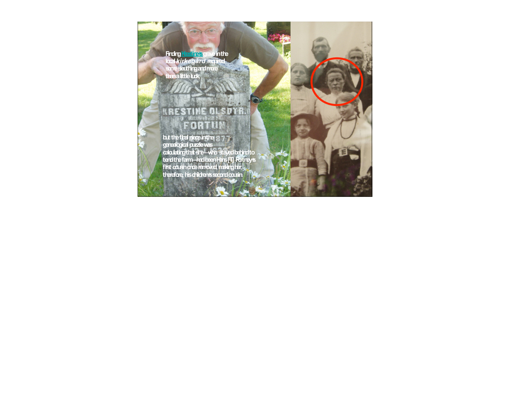
⛪slide_007.jpg
');this.remove();">
Slide 7
Kristina's Grave — Finding Kristina Olsdotter Fortun's grave in the local kirkegård required sleuthing. She was Hans Fortney's first cousin once removed and the last Fortney to live on the farm (managed it until ~1925).
🪦slide_007.jpg
');this.remove();">
Slide 7
The kirkegård across the road from the Fortun village church. Kristina Olsdotter Fortun (b. 26 May 1877, d. 12 Jan 1939) is buried here.
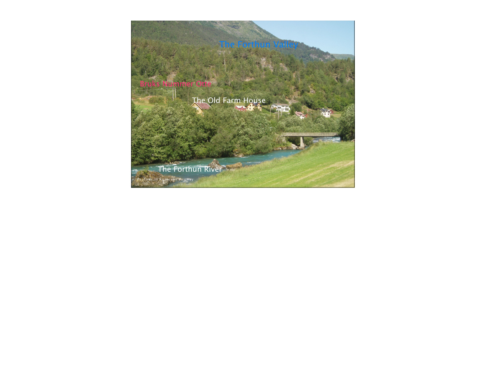
🌊slide_014.jpg
');this.remove();">
Slide 14
The Forthun River. Photo: Jill Andersen Fortney.
🏡slide_014.jpg
');this.remove();">
Slide 14
The Old Farm House at Forthun — Bruks Nummer Otte. Photo: Jill Andersen Fortney.
🏔️slide_014.jpg
');this.remove();">
Slide 14
The Forthun Valley, Sogn, Norway. Photo: Jill Andersen Fortney.
The City of Bergen, at the head of the Sogne Fjord. The Fantofte Stavkirke — originally the Fortun church — stands in Bergen. Photo: Jill Andersen Fortney.
Fortney / Forthun
The Fortun Church & Fantofte Stavkirke
The original Fortun Stave Church stood in the village until 1883, when the congregation sold it to Bergen merchants. It became the famous Fantofte Stavkirke — and was burned by arsonists in 1992. It was rebuilt and stands today in Bergen as a major cultural landmark.
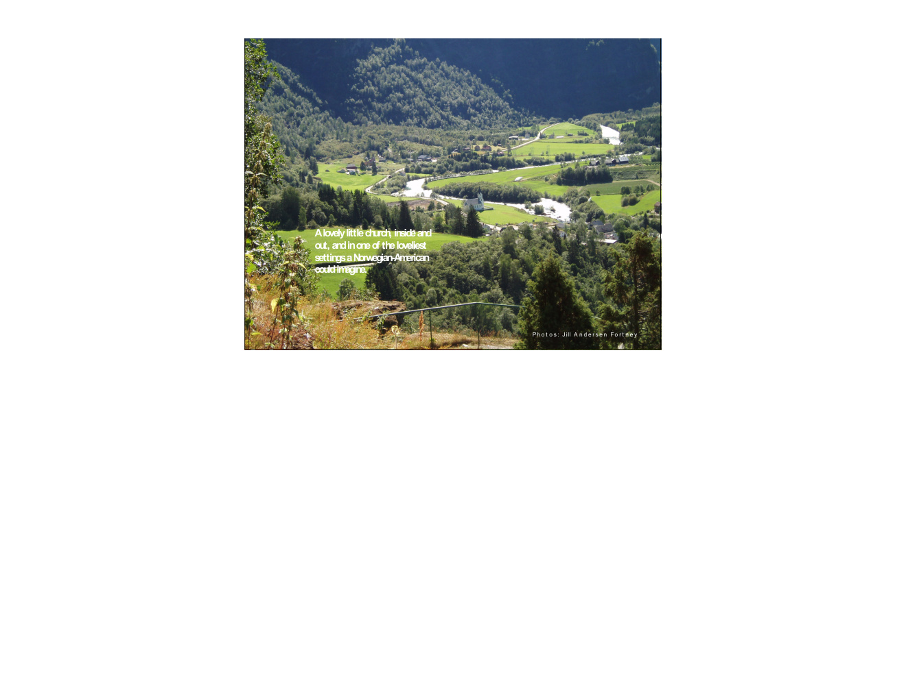
⛪slide_008.jpg
');this.remove();">
Slide 8
New Church at Fortun — a lovely little church across the road from the kirkegård. Photo: Jill Andersen Fortney.
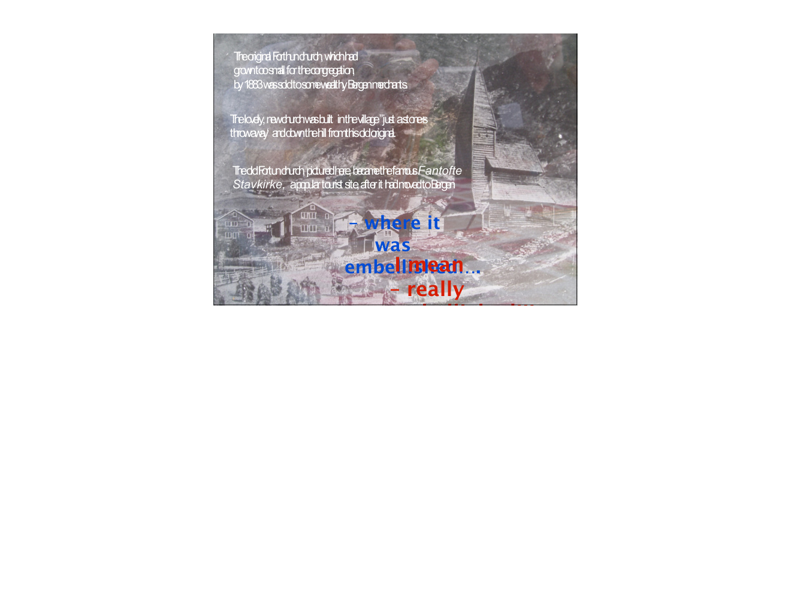
⛪slide_009.jpg
');this.remove();">
Slide 9
The original Fortun Stave Church — sold to Bergen merchants in 1883. It became the Fantofte Stavkirke in Bergen, "where it was embellished."
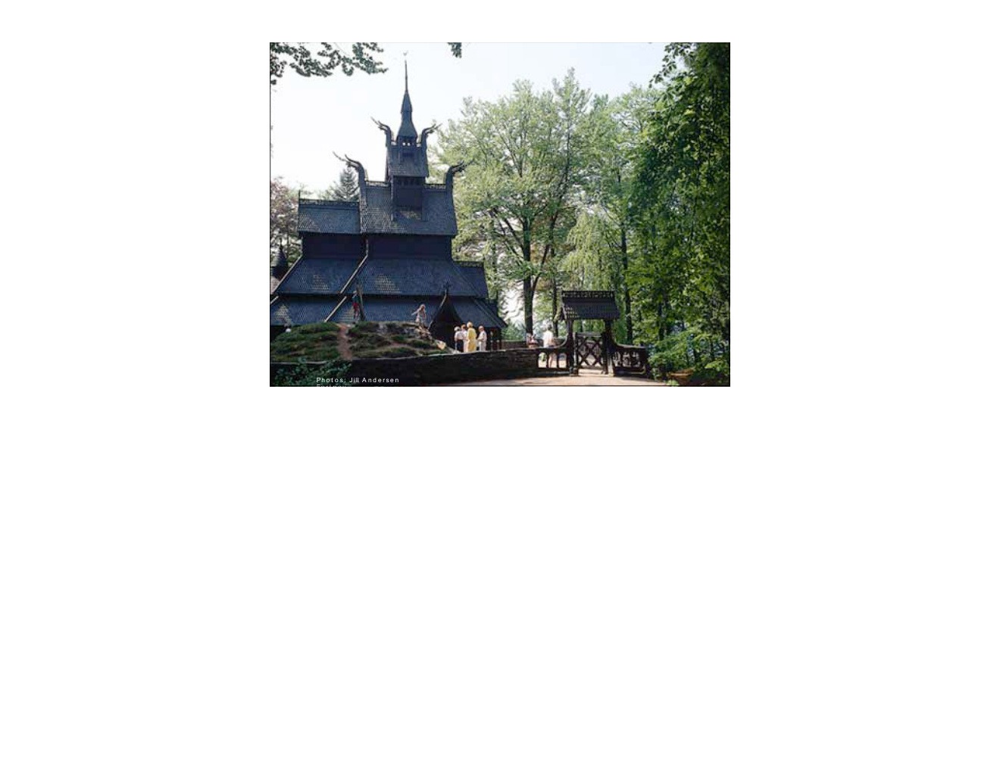
⛪slide_010.jpg
');this.remove();">
Slide 10
The much-embellished Fantofte Stavkirke in Bergen — the Fortun church reborn as a tourist attraction in 1883. Photo: Jill Andersen Fortney.
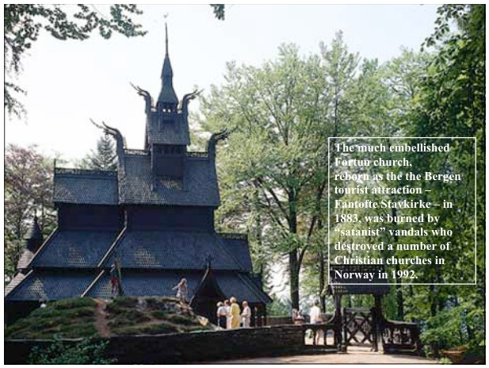
🔥slide_011.jpg
');this.remove();">
Slide 11
The Fantofte Stavkirke was burned by arsonist vandals in 1992 as part of a wave of church arsons in Norway.
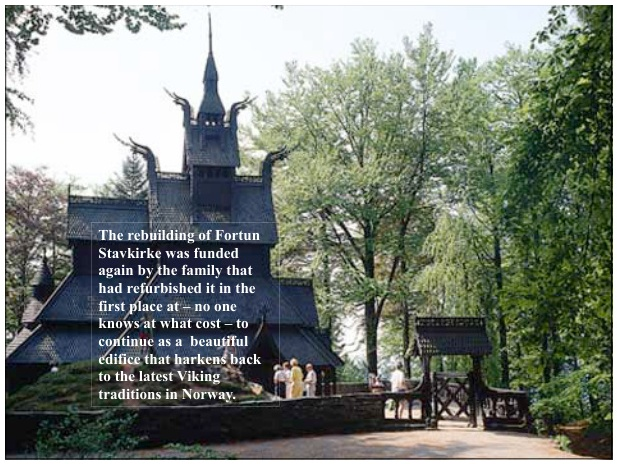
⛪slide_012.jpg
');this.remove();">
Slide 12
The rebuilt Fantofte Stavkirke — funded by the same family that had originally refurbished it. A beautiful edifice harkening back to Viking traditions.
The Fortun village church — lovely inside and out. Photo: Jill Andersen Fortney.
Fortney / Forthun
Genealogy Documentation
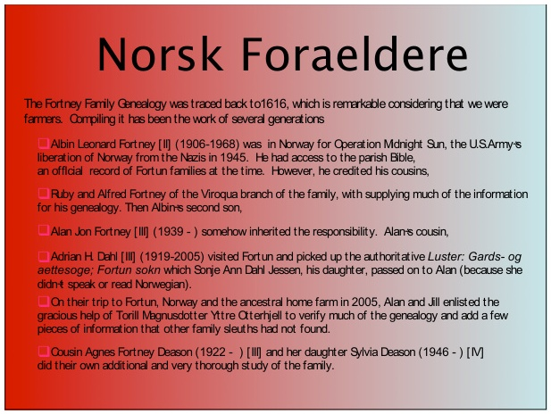
📜slide_013.jpg
');this.remove();">
Slide 13
Norwegian Genealogy — how the family history was compiled. Albin Fortney accessed the parish Bible during Operation Midnight Sun (1945). The genealogy traces back to 1616.
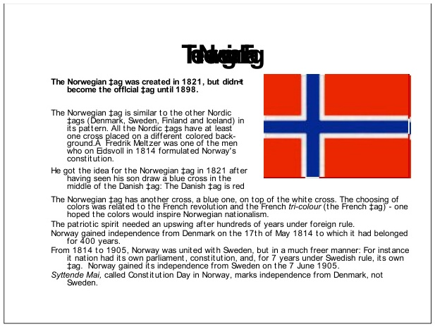
🇳🇴slide_023.jpg
');this.remove();">
Slide 23
The Norwegian Flag — created 1821, official from 1898. Norway gained independence from Denmark on 17 May 1814 (Syttende Mai), and from Sweden on 7 June 1905.
📋slide_023.jpg
');this.remove();">
Slide 23
Genealogy chart from Luster: Gards-og Ættesoge Fortun Sokns — the authoritative Norwegian farm record.
Fortney / Forthun
Family Portraits & Reunion
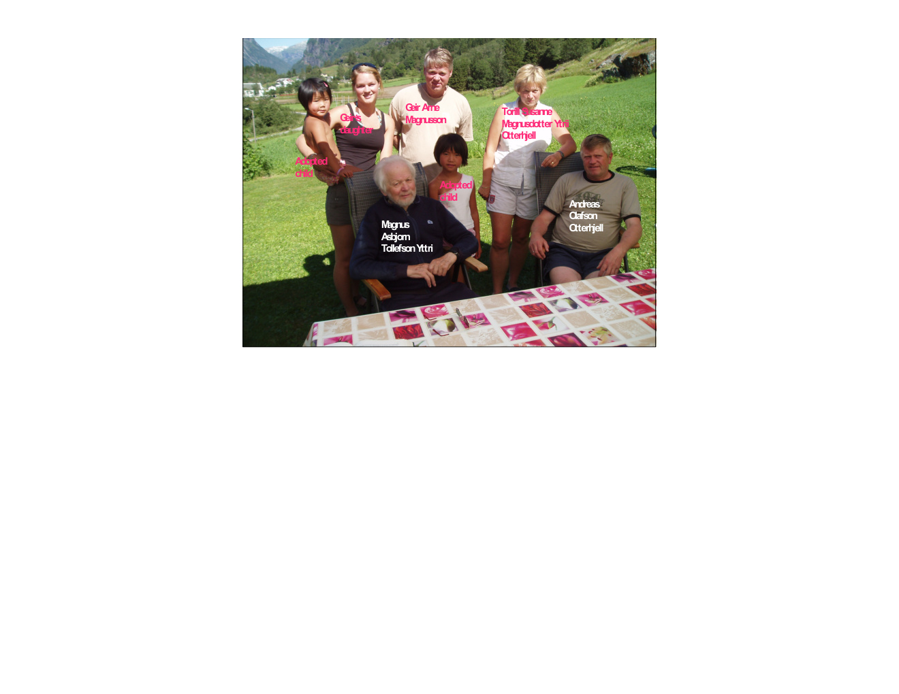
👨👩👧slide_004.jpg
');this.remove();"
onclick="openLightbox('images/reunion/slide_004.jpg', 'Slide 4 — The Otterhjell family. Magnus Asbjørn Tollefson Yttri, his daughter Torill Susanne Magnusdotter Yttri Otterhjell, her husband Andreas Olafson Otterhjell, and Geir Arne Magnusson.')">
Slide 4
The Otterhjell family — Magnus Yttri (grandfather), Torill Otterhjell (current farm owner), and Andreas Otterhjell.
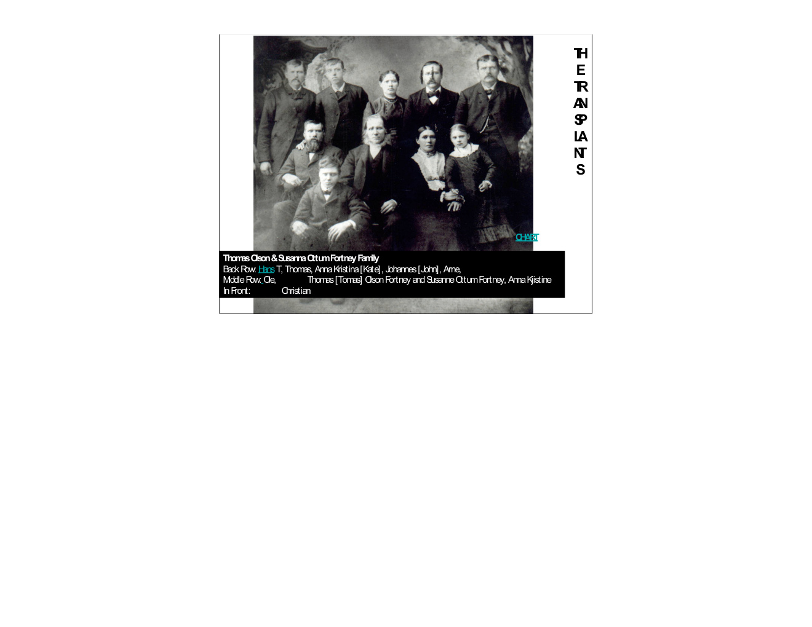
📷slide_026.jpg
');this.remove();">
Slide 26
Thomas Olson & Susanna Ottum Fortney Family. Back row: Hans T., Thomas, Anna Kristina (Kate), Johannes (John), Arne. Middle row: Ole, Thomas Olson Fortney and Susanna Ottum Fortney, Anna Kjistine. Front: Christian.
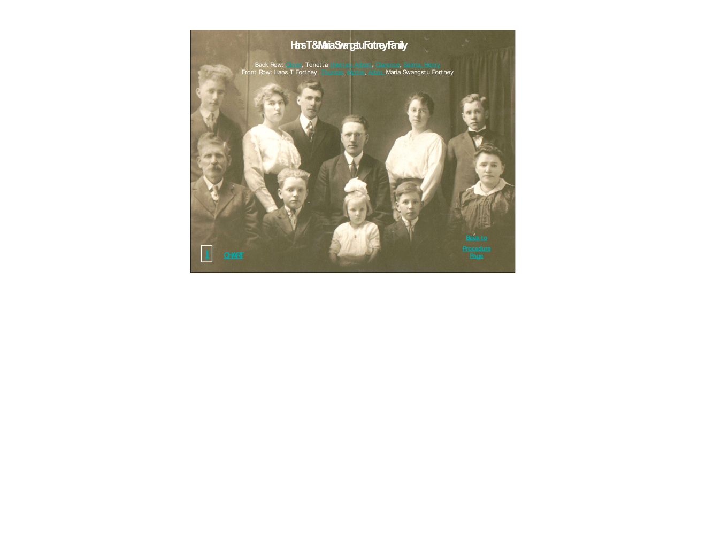
📷slide_029.jpg
');this.remove();">
Slide 29
Hans T. & Maria Swangstu Fortney Family. Back row: Oliver, Tonetta (Nettie), Albert, Clarence, Selma, Henry. Front row: Hans T. Fortney, Thomas, Myrtle, Albin, Maria Swangstu Fortney.
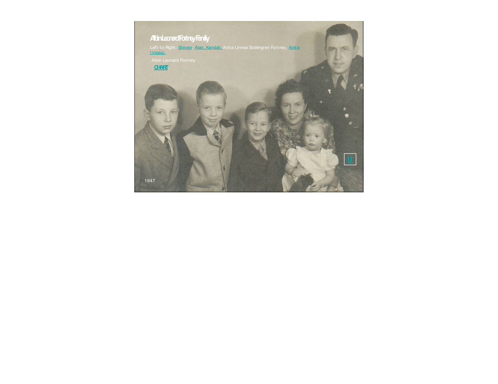
📷slide_047.jpg
');this.remove();">
Slide 47
Albin Leonard & Anita Södergren Fortney Family, 1947. Left to right: Steven, Alan, Kendall, Anita Linnea Södergren Fortney, Anita (Vesla), Albin Leonard Fortney.
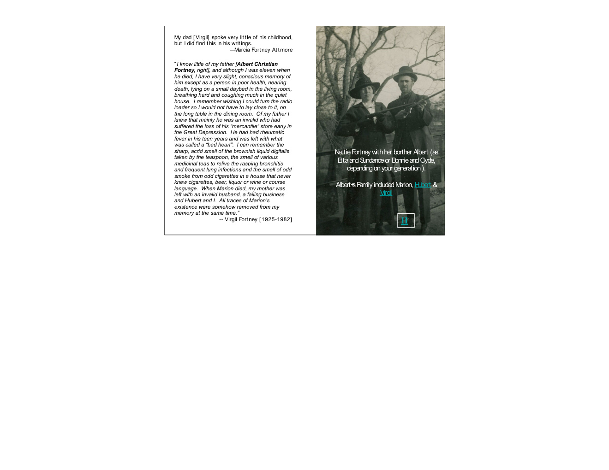
📷slide_032.jpg
');this.remove();">
Slide 32
Nettie Fortney with her brother Albert (as "Etta and Sundance — or Bonnie and Clyde, depending on your generation"). Albert's family included Marion, Hubert and Virgil.
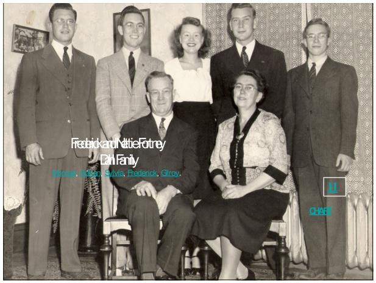
📷slide_034.jpg
');this.remove();">
Slide 34
Frederick and Nettie Fortney Dahl Family: Monrad, Adrian, Sylvia, Frederick, Gilroy.
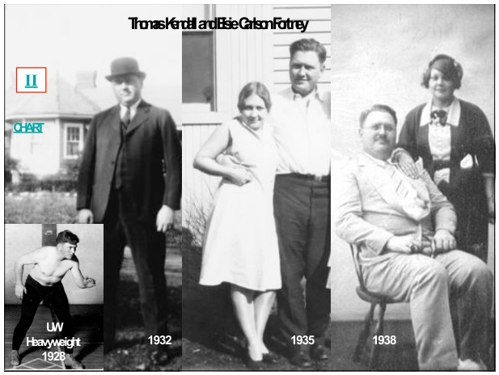
📷slide_045.jpg
');this.remove();">
Slide 45
Thomas Kendahl Fortney — UW heavyweight wrestler, 1928, 1932, 1935, 1938. Thomas Kendall and Elsie Carlson Fortney. He died in Detroit in 1944; Elsie never remarried.
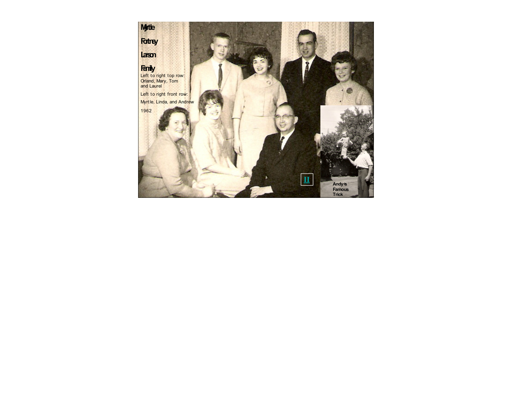
📷slide_049.jpg
');this.remove();">
Slides 49–50
Myrtle Fortney Larson Family, 1962. Left to right top row: Orland, Mary, Tom and Laurel. Front row: Myrtle, Linda, and Andrew. The "Larson cousins" of Alan Jon Fortney.
Adding Images
Place image files in the images/reunion/ folder, named slide_001.jpg through slide_199.jpg. Pages 1–199 from the PDF correspond to Slides 1–199 in this gallery. Images that are not yet available show a placeholder automatically.